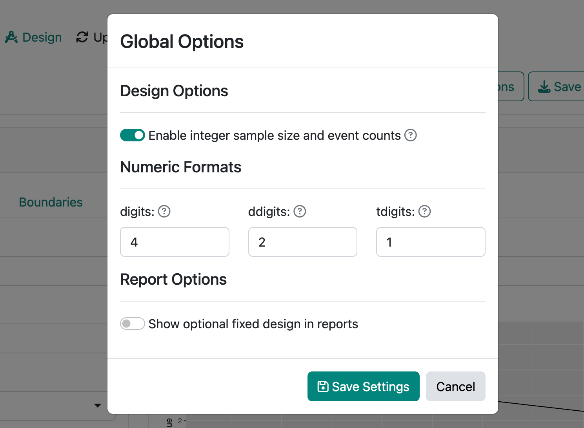
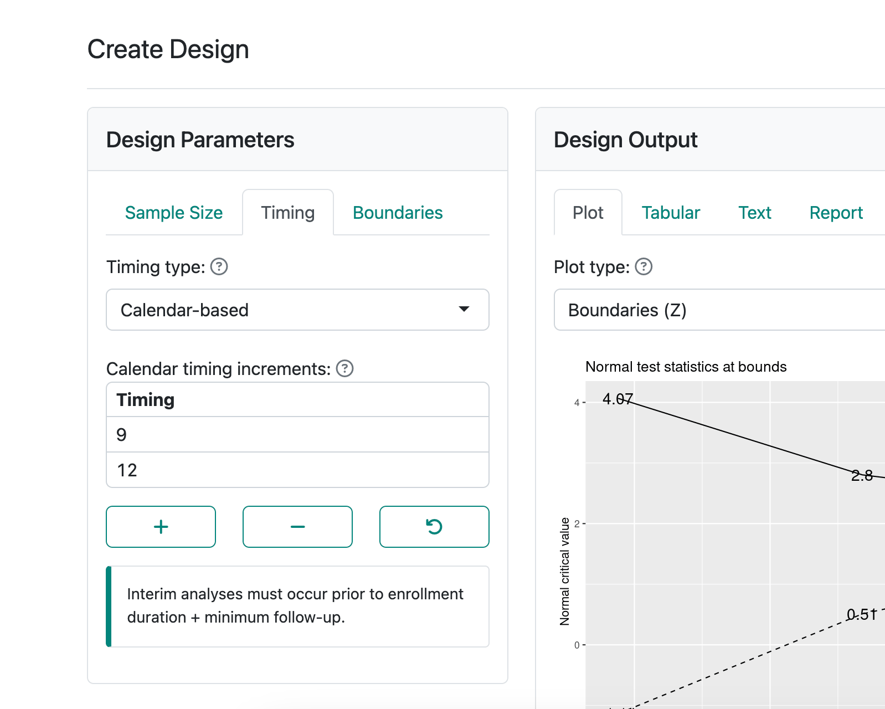
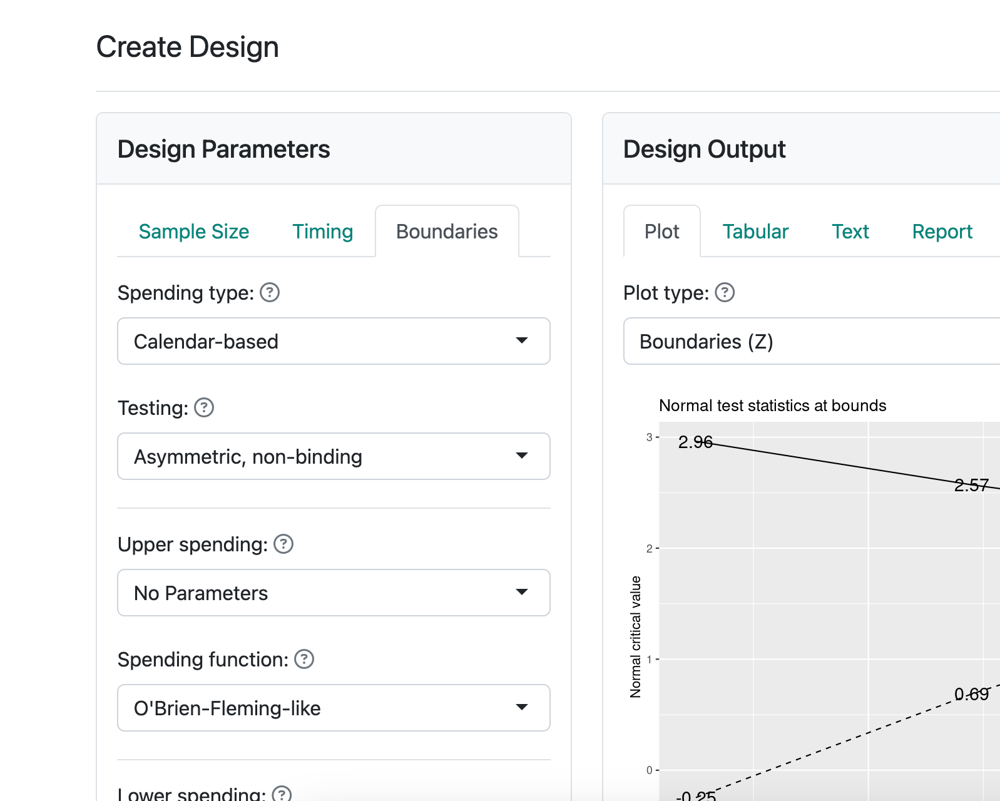

We are thrilled to announce the release of gsDesign 3.6.0. gsDesign makes it easy to create group sequential clinical trial designs in R. gsDesign also offers a web interface to enable both design creation/updates without coding and code generation to reproduce the design.
You can install gsDesign from CRAN with:
install.packages("gsDesign")What’s new in gsDesign 3.6.0
Time-to-event endpoint design with calendar timing of analyses
We added a gsSurvCalendar()
function to enable group sequential design for time-to-event outcomes
using calendar specification of interim analysis timing.
These designs can use either information- or calendar-based spending with latter
focused on trials where the priority may be on finishing in a fixed time
rather than a fixed number of endpoints.
Integer sample size and event count
toInteger():
Fixed the documentation and execution based on the ratio argument.
print.gsSurv():
Improve the display of targeted events (very minor).
The boundary crossing probability computations did not change.
The need for this was made evident by the addition of the toInteger() function.
Translate survival design bounds to exact binomial bounds
toBinomialExact() and
gsBinomialExact():
fixed error checking in bound computations, improved documentation and error messages.
Breaking change: gsSurv() and nSurv()
have updated default values for T and minfup so that function calls
with no arguments will run.
Legacy code with T or minfup not explicitly specified could break;
this was considered unlikely to be common and the new defaults offer some convenience.
gsDesign Shiny app 2023.11.0
The Shiny app for gsDesign has been updated to 2023.11.0, working together with gsDesign 3.6.0. This version supports the new key features added in gsDesign 3.5.0 and 3.6.0. This update is also backward compatible, meaning restoring previously saved designs will work consistently.
Integer sample size and event count
The app now defaults to translating group sequential design to integer events (survival designs) or sample size (other designs except information-based designs).
To change this behavior:
- Click Global Options in the upper-right corner.
- Switch off Enable integer sample size and event counts.
- Click Save Settings.

The value of this new option will be saved when you save the design to
the .rds file. For reproducibility, restoring previously saved designs
will have this option switched off by default.
Calendar-based timing and spending
New options have been added to allow calendar-based timing and spending when creating the design.
Calendar-based timing:
- Under the Design page, switch to the Timing tab.
- In Timing type, select Calendar-based.
- Fill out the Calendar timing increments.

Calendar-based spending:
- Under the Design page, switch to the Boundaries tab.
- In Spending type, select Calendar-based.
Note that these options will only show up when the endpoint type is time-to-event, and when the option under Enrollment is Vary enrollment rate (Lachin-Foulkes).

UI and report template improvements
We improved many theming details of specific UI elements in this release. For example, the Restore Design button now renders properly under Firefox. The padding of code blocks has been increased. The editing experience of matrix inputs is now better aligned with numeric or select inputs.
Last but not least, the R Markdown report templates now load ggplot2 explicitly.
This is due to the dependency being moved from Depends to Imports
since gsDesign 3.4.0 (#56).